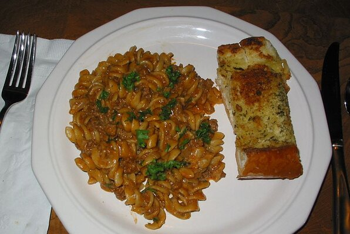

A delectable meal to suit any light diet, meant to keep you healthy and your stomach happy at the same time.
This dish here represents one of my proudest moments in the kitchen. With a dash of mince, a bit of parsely, and some onion soup; this particular meal will rock your core and bring a new meaning to Macaroni and Mince.
Ingredients:
Two tablespoons of Margarine.
One pound ground beef.
One chopped onion.
One cup of tomato juice.
Once cup of Water.
One cup of Beef Stock.
One Teaspoon Worcertershire sauce.
Two cups of uncooked spiral pasta.
Half a cup of Sour Cream.
Three Quarters of fresh chopped parsely.
One Teaspoon Sherry.
Steps:
Melt margarine in a large, heavy skillet over medium heat, and stir in the ground beef and onion. Cook until onion is
tender and beef is evenly browned. Reduce heat to low.
In a medium bowl, mix tomato juice, water, beef stock, Worcestershire sauce, celery salt, and pepper. Pour into the beef
mixture
Stir pasta into the skillet. Cover, and simmer 25 minutes, stirring occasionally.
Remove the mixture from heat, and stir in sour cream and sherry. Sprinkle with parsley to serve.